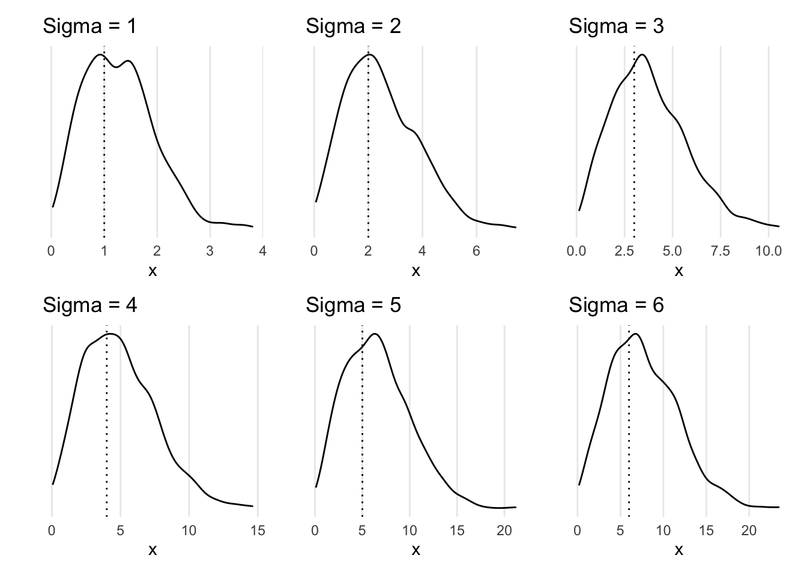
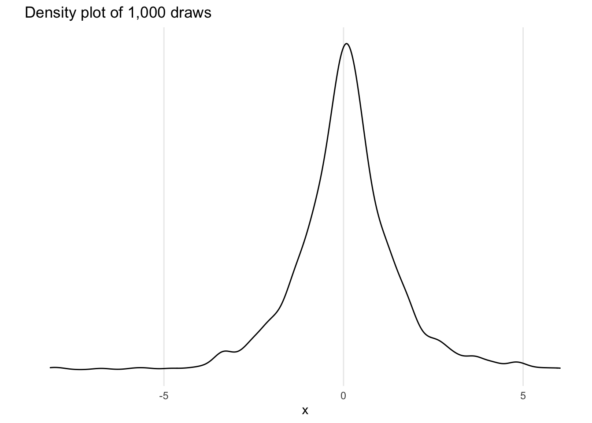

posint_gamma <- function(n) {
if (any(!is.integer(n) | n <= 0)) stop("n must be a positive integer.")
factorial(n - 1)
}
all(posint_gamma(1:4) == gamma(1:4))[1] TRUEAndrew Moore
February 9, 2023
The definition of the Gamma function where \(n \in \mathbb{Z}^{+}\) is \[ \Gamma(n) = (n - 1)! \]
This can be replicated in R using the factorial() function.
We have \[ f(x; p) = \begin{cases} p(1 - p)^x, x = 0, 1, 2, 3, \cdots \\ 0, \text{ otherwise.} \end{cases} \]
We want the recursive formula for \(f(x + 1; p) = L \cdot f(x; p).\)
Solving for \(L\), we see \[\begin{align*} f(x + 1; p) &= L \cdot f(x; p) \\ p(1 - p)^{(x + 1)} &= L \cdot p(1 - p)^x \\ p(1 - p)^x(1 - p)^1 &= L \cdot p(1 - p)^x \\ (1 - p) &= L. \end{align*}\]
Let \(X\) be a discrete R.V. where \(x_1 = 10, x_2 = 30, x_3 = 50, x_4 = 70, x_5 = 90\), and having the following cdf:
| \(X\) | 10 | 30 | 50 | 70 | 90 |
|---|---|---|---|---|---|
| \(F(x) = P(X \leq x)\) | 0.27 | 0.41 | 0.64 | 0.92 | 1.00 |
set.seed(20230208)
f <- function(print_check = FALSE) {
u <- runif(1, 0, 1)
x <- c(10, 30, 50, 70, 90)
p <- c(0.27, 0.41, 0.64, 0.92, 1)
keep <- dplyr::lag(p, default = 0) < u & u <= p
if (print_check) print(data.frame(x, p, u, keep))
x[keep]
}
f(print_check = TRUE) # run once as an example x p u keep
1 10 0.27 0.7946032 FALSE
2 30 0.41 0.7946032 FALSE
3 50 0.64 0.7946032 FALSE
4 70 0.92 0.7946032 TRUE
5 90 1.00 0.7946032 FALSE[1] 70x <- replicate(10000, f()) # examine the distribution, take 10k samples
x |> table() |> prop.table() |> cumsum() |> round(2) 10 30 50 70 90
0.27 0.41 0.64 0.92 1.00 \[\begin{align*} F(x) = u &\implies 1 - e^{-(0.25x^3)} = u \\ &\implies 1 - u = e^{-(0.25x^3)} \\ &\implies ln(1 - u) = -\frac{1}{4}x^3 \\ &\implies -4ln(1 - u) = x^3 \\ &\implies (-4ln(1 - u))^{\frac{1}{3}} = x \\ &\implies F^{-1}_X(u) = x. \end{align*}\]
The Rayleigh density is \[ f(x) = \frac{x}{\sigma^2}e^{-x^2 / 2\sigma^2}, x \geq 0, \sigma > 0. \]
Develop an algorithm to generate random samples from a \(Rayleigh(\sigma)\) distribution. Generate samples for several choices of \(\sigma > 0\) and check that the mode of the generated samples is close to the theoretical mode \(\sigma\) (check the histogram).
We will use the inverse-transformation method. First, we need to find the cdf \(F_X(x)\): \[\begin{align*} F_X(x) &= \int_{-\infty}^x f(t)\ dt \\ &= \int_{-\infty}^0 0\ dt + \int_0^x \frac{t}{\sigma^2} e^{-t^2 / 2\sigma^2}\ dt \\ &= \int_0^x \frac{t}{\sigma^2} e^{-t^2 / 2\sigma^2}\ dt \\ &= -\int_0^x e^u\ du \tag{let $u = \frac{-t}{2\sigma^2}$ and $du = \frac{-t}{\sigma^2}\ dt$} \\ &= -e^u\ \Bigg|_{t=0}^{t=x} \\ &= -e^{\frac{-t^2}{2\sigma^2}}\ \Bigg|_{t=0}^{t=x} = \Bigl(-e^{\frac{-x^2}{2\sigma^2}} - (-1) \Bigr) = 1 - e^{\frac{-x^2}{2\sigma^2}}, x \geq 0, \sigma > 0. \end{align*}\]
We now need to find \(F_X^{-1}(u) = x\): \[\begin{align*} F_X(x) = u &\implies 1 - e^{-x^2}{2\sigma^2} = u \\ &\implies 1 - u = e^{-x^2}{2\sigma^2} \\ &\implies -2\sigma^2 ln(1 - u) = x^2 \\ &\implies \sqrt{-2\sigma^2 ln(1 - u)} = x \\ &\implies F_X^{-1}(u) = x. \end{align*}\]
We can then apply the algorithm:
Demonstrations with several values of \(\sigma\), using R.
library(tidyverse)
library(patchwork)
finv <- function(u, sigma) sqrt(-2*sigma^2 * log(1- u))
gen_density <- function(n = 1000, sigma = 1) {
dat <- tibble(u = runif(n, 0, 1), x = finv(u, sigma))
ggplot(dat, aes(x = x)) +
geom_vline(xintercept = sigma, lty = "dotted") +
geom_density() +
labs(title = str_glue("Sigma = {sigma}"), x = "x", y = "") +
theme_minimal(base_size = 11) +
theme(
axis.text.y = element_blank(),
panel.grid.minor = element_blank(), panel.grid.major.y = element_blank()
)
}
(gen_density(sigma = 1) | gen_density(sigma = 2) | gen_density(sigma = 3)) /
(gen_density(sigma = 4) | gen_density(sigma = 5) | gen_density(sigma = 6))
We have \(f(x) = \frac{1}{2}e^{-|x|}.\) This function is symmetric around 0. So, the resulting cdf \(F_X(x)\) will be a piecewise function. If \(x < 0,\) we have \[\begin{align*} \int_{-\infty}^x f(t)\ dt &= \int_{-\infty}^x \frac{1}{2} e^{-|t|}\ dt \\ &= \frac{1}{2} \int_{-\infty}^x e^t\ dt \tag{because $-\infty < t < 0$} \\ &= \frac{1}{2} e^t \Bigg|_{-\infty}^x \\ &= \lim_{n \to -\infty} \frac{1}{2} e^t \Bigg|_n^x \\ &= \lim_{n \to -\infty} \frac{1}{2}(e^x - e^n) \\ &= \lim_{n \to -\infty} \frac{1}{2}e^x - \cancelto{0}{\frac{1}{2}e^n} \\ &= \frac{1}{2}e^x. \end{align*}\]
Note that \(\int_{-\infty}^0 f(x)\ dx = \frac{1}{2}\) because \[\begin{align*} \int_{-\infty}^0 f(x)\ dx &= \int_{-\infty}^0 \frac{1}{2} e^{-|x|}\ dx \\ &= \frac{1}{2} \int_{-\infty}^0 e^x\ dx \tag{because $-\infty < x < 0$} \\ &= \frac{1}{2} e^x \Bigg|_{-\infty}^0 \\ &= \lim_{n \to -\infty} \frac{1}{2} e^x \Bigg|_n^0 \\ &= \lim_{n \to -\infty} \frac{1}{2}(e^0 - e^n) \\ &= \lim_{n \to -\infty} \frac{1}{2} - \cancelto{0}{\frac{1}{2}e^n} \\ &= \frac{1}{2}. \end{align*}\]
Now, if \(x \geq 0\), we have \[\begin{align*} \int_{-\infty}^0 f(t)\ dt + \int_0^x f(t)\ dt &= \frac{1}{2} + \frac{1}{2}\int_0^x e^{-|t|}\ dt \\ &= \frac{1}{2} + \frac{1}{2}\int_0^x e^{-t}\ dt \tag{because $0 \leq t \leq x$} \\ &= \frac{1}{2} - \frac{1}{2} e^{-t} \Bigg|_0^x \\ &= \frac{1}{2} - \frac{1}{2}(e^{-x} - e^0) \\ &= \frac{1}{2} + \frac{1}{2} - \frac{1}{2}e^{-x} \\ &= 1 - \frac{1}{2}e^{-x}. \end{align*}\]
Thus, \(F_X(x)\) is defined as \[ F_X(x) = \begin{cases} \frac{1}{2}e^x, & x < 0 \\ 1 - \frac{1}{2}e^{-x}, & x \geq0 \end{cases} \]
and given some \(x\), we have \(F_X(x) = u\). We now need an inverse \(F_X^{-1}(u)\) satisfying \(F_X^{-1}(u) = x\). This function will also be piecewise.
If \(x < 0\) \[\begin{align*} F_X(x) &= \frac{1}{2}e^x = u \\ &\implies e^x = 2u \\ &\implies x = ln(2u.) \end{align*}\]
If \(x \geq 0\) \[\begin{align*} F_X(x) &= 1 - \frac{1}{2} e^{-x} = u \\ &\implies \frac{1}{2}e^{-x} = 1 - u \\ &\implies e^{-x} = 2 - 2u \\ &\implies -x = ln(2 - 2u) \\ &\implies x = -ln(2 - 2u). \end{align*}\]
So \[ F_X^{-1}(u) = \begin{cases} ln(2u) & u < 0.5 \\ -ln(2 - 2u) & u \geq 0.5. \end{cases} \]
Now we can apply the algorithm
Implemented in R code, to generate 1,000 realizations.
finv <- function(u) ifelse(u < 0.5, log(2*u), -log(2 - 2*u))
lapl <- function(n = 1000) finv(runif(n, 0, 1))
ggplot(tibble(x = lapl())) +
geom_density(aes(x = x)) +
theme_minimal(base_size = 11) +
theme(
axis.text.y = element_blank(),
panel.grid.minor = element_blank(), panel.grid.major.y = element_blank()
) +
labs(y = "", title = "Density plot of 1,000 draws")
We will use the Box-Mueller Transform to generate samples from standard normal distributions.
10 values from \(\chi^2(5).\)
dat <- bmt(25)
indices <- seq(1, 25, 5)
chi <- numeric()
for (element in indices) {
x2 <- c(sum(dat$x[element:element + 4]^2), sum(dat$y[element:element + 4]^2))
chi <- c(chi, x2)
}
print(chi) [1] 0.768997559 0.380225654 3.472371432 1.704080166 0.008472789 0.255175259
[7] 0.002790484 0.320066156 1.301886762 0.84216563710 values from \(t(3).\)
dat <- bmt(30)
z <- dat$x[1:10]
v <- numeric()
q <- 3
indices <- seq(1, q * 10, q)
for (element in indices) {
x2 <- sum(dat$y[element:element + (q - 1)]^2)
v <- c(v, x2)
}
z / sqrt(v / q) [1] -16.35420125 -1.80444116 1.41025368 4.11248280 -2.87063397
[6] 3.13739856 0.55614796 0.55255069 0.02208829 -0.0915846810 values from \(F(6, 10).\)
dat <- bmt(100)
v <- numeric()
m <- 6
vind <- seq(1, m * 10, m)
for (element in vind) {
x2 <- sum(dat$x[element:element + (m - 1)]^2)
v <- c(v, x2)
}
w <- numeric()
n <- 10
wind <- seq(1, n * 10, n)
for (element in wind) {
x2 <- sum(dat$y[element:element + (n - 1)]^2)
w <- c(w, x2)
}
(v / m) / (w / n) [1] 2.057290e+03 5.044342e-01 3.006081e+00 3.935956e-01 9.975536e+01
[6] 3.793622e+00 5.699611e-03 3.505360e+00 2.946466e+03 1.257410e+01